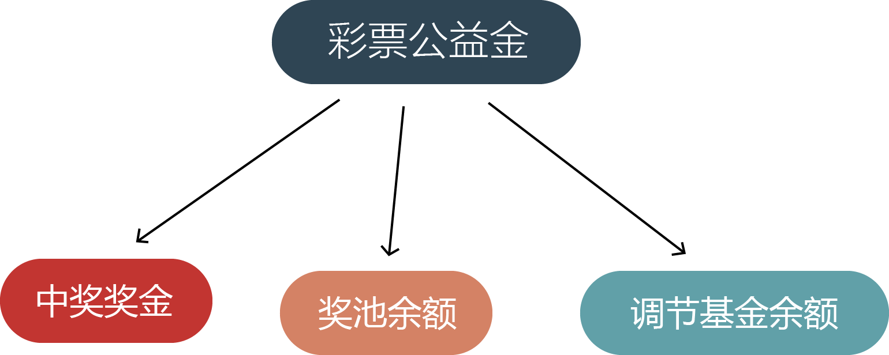

可信赖的国家公益彩票
——基于广东省福利彩票公益金分配看我国彩票资金流向
生活中的福利彩票
在街边经常会看到这些红红火火特别喜庆的福彩中心，你会不会想进去投上一注呢？不了解的人看到“彩票”二字会很自然地想到“赌博”，实际上它是一种奖券，以抽签给奖的方式进行筹款。而生活中的我们往往会忽视掉彩票“福利”这一方面的公益性。

陈小姐买体彩很多年了，“体彩带给我乐趣和喜悦比不中奖的遗憾要更多。虽然我不中奖的时候，身边的朋友、家人都经常取笑我，‘别买啦，买那么多次没见你中过什么大奖！’但是我也不是奔着我一定能中大奖去的。关键是体彩让我锻炼了大脑，让它跟数字打打交道，变得更灵活。”陈小姐在谈论到体彩的益处时说道。“本来买体彩就是要放好心态，不能操之过急。能中就中，不中也是做善事了。我了解过体彩的公益性去向，会为体育事业，比如基础的体育设施作出贡献。”
蒋先生刚刚加入彩民阵营一年。起初，他买彩票就是冲着头奖去的，有时候会因为一两个数字错过更高的奖金额而懊恼。有一次他再去福彩中心站投注时，跟工作人员聊起这个事情。工作人员拿出刚好刷到的“福彩公益金资助儿童上学”的新闻给他看。“从那以后，我对福彩的态度慢慢有了转变，就算不中奖，也能切实地感受到自己投身于社会慈善事业中，这是一件很有意义的事。”
也许您是一位忠实的福彩彩民，也许您是一位敬业的投注站业主；也许您是在福利院长大的一名孤儿，也许您身边有一位生活在敬老院的老人；也许您是一位受过福利公益金资助的优秀学子，也许您是一个幸运的中奖者......真真切切，实实在在，中国福利彩票，就在您身边。
福利彩票在中国
中国福利彩票始于1987年，以“团结各界热心社会福利事业的人士，发扬社会主义人道主义精神，筹集社会福利资金，兴办残疾人、老年人、孤儿福利事业和帮助有困难的人”、即“扶老、助残、救孤、济困”为宗旨。随后又设立了中国福利彩票发行中心作为发行机构。 目前中国福利彩票的种类有：刮刮乐、双色球、3D、地方福彩、七乐彩、35选7、29选7、东方6+1、华东15选5、新3D。其中比较有名的是福彩中的双色球，体彩里的大乐透，买彩票不是一件随便挑几个数字就能完成的事。如果想要玩得好，还得算算术，计算出哪种组合方式、投注方式的胜率最高。
什么是彩票公益金
彩票公益金是指政府非税收入形式之一，指按照国家规定发行彩票取得销售收入扣除返奖奖金、发行经费后的净收入。以双色球为例，其销售额的51%作为彩票奖金、13%作为发行费、36%作为彩票公益金。
筹集彩票公益金支持社会福利事业加快发展，是发行福利彩票的出发点和落脚点，也是福利彩票事业发展的关键和灵魂。

公益金从哪里来
《彩票公益金管理办法》第四条规定：彩票公益金由各省、自治区、直辖市彩票销售机构根据国务院批准的彩票公益金分配政策和财政部批准的提取比例，按照每月彩票销售额据实结算后分别上缴中央财政和省级财政。由彩票销售机构将彩票销售额按比例结算后上缴中央财政和省级财政作为公益金。
公益金去哪里
根据《条例》，民政部安排使用的彩票公益金主要用于社会福利和社会公益事业发展。民政部按照福利彩票“扶老、助残、救孤、济困、赈灾”的发行宗旨，重点用于老年人、残疾人、孤儿、有特殊困难及遭受自然灾害等特殊群体的社会福利设施建设和受助对象直接受益的项目，具体分为老年福利类项目、残疾人福利类项目、儿童福利类项目、社会公益类项目。
广东省福利彩票公益金
广东省福利彩票公益金实行“收支两条线”管理，分配使用坚持遵循“扶老、助残、救孤、济困”的宗旨，按照科学、合理、公平、公正的原则，统筹考虑区域发展、人口数量、建设规模等因素，确定项目补助标准，重点用于老年人、残疾人、孤儿、部分重点优抚对象、困难群众等特殊群体服务的社会福利、社区服务、社会公益、残疾人事业项目。
由上图可知，近年来老年人福利项目一直以来是广东省公益金占比大项，社会公益类项目占比最小。相比较而言，儿童福利类项目逐步上升，残疾人福利项目些许下降。
据调查，广东省福利彩票公益金积极用于养老服务体系建设项目，主要用于养老机构新建、扩建和改建项目，养老服务设施改造项目，设备购置更新和养老服务补贴类项目，城市居家养老服务中心项目，农村养老服务“幸福计划”项目，爱心护理计划-临终关怀项目，家庭服务中心项目补助项目等。
广东省公益金项目地图，鼠标移至各个市县可查看各地级市公益金项目所配金额。
由上图可知省本级和省假肢康复中心厅本级占据了极大部分公益金项目，地级市相对较少。2016年，“功臣安康”计划项目900万元。主要用于各优抚医院为残疾军人、烈属、在乡复员军人等重点优抚对象实施开展短期康复疗养、巡回医疗，以及省假肢康复中心为全省残疾军人配发康复辅助器具等活动。
如何让彩票的公益性深入人心
“建设负责任、可信赖、健康持续发展的国家公益彩票”这一目标指引各级彩票发行管理机构及从业人员砥砺前行。在落实“责任彩票”工作过程中，各地体彩从建纲立制到落实监督，方式方法或有不同，但目的指向同一点——引导大众正确认识彩票的公益属性。
目前地方省市出台的“构建责任彩票新机制方法”大部分内容是对彩票发行管理机构及从业人员的工作要求，彩票社会责任应该是所有彩票参与者的社会责任，彩票参与者不仅仅包含彩票监督、管理、发行、销售、服务的机构和群体，最不能落下的是购买彩票的人（我们习惯称之为“购彩者”），他们是彩票公益的践行者，更是“责任彩票”这项工作成果的直接受益者和监督者。他们对彩票的解读，才是“责任彩票”建设最幸福的回声。
如何让彩票公益金的公益性体现得更加充分？
首先，应加强对公益金的后续监管。其次，应提高公益金使用透明度。再次，应强化对公益金的舆论宣传。总之，确保彩票公益金使用规范，关键在于加强监督，提高公益金的透明度，最大程度实现公益金使用过程的信息公开；把公益金使用纳入法治轨道，增强法治威慑力，铲除滋生腐败的土壤，让彩票公益金更好地发挥作用。
“可信赖的国家公益彩票”这10个字写起来容易，但背后蕴含的公信力建设是中国彩票发行这么久以来一直不曾懈怠的工作，从阳光开奖到公益金使用项目宣传普及，每一个环节都留下一个个深深的印记，这些印记印刻在每一位彩票参与者的心里，也被越来越多的群众看见。